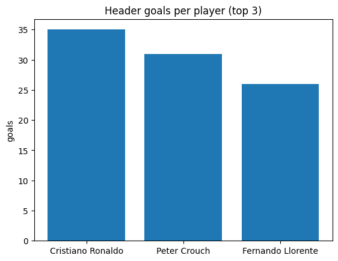
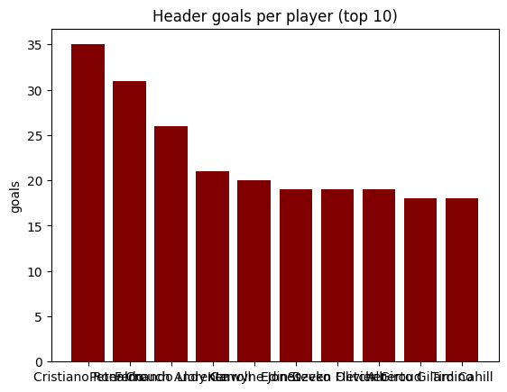
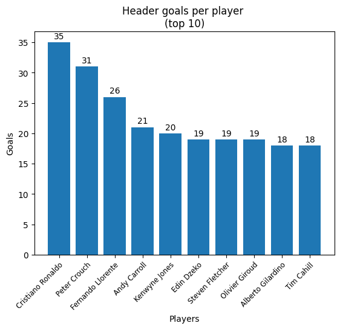
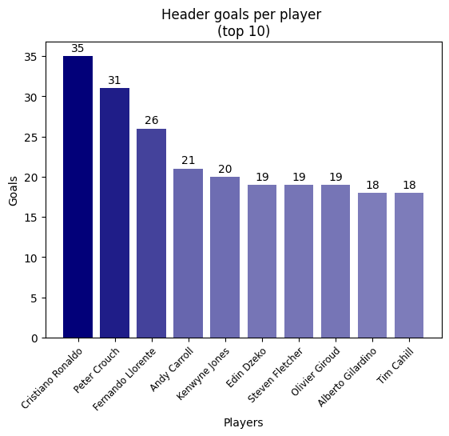
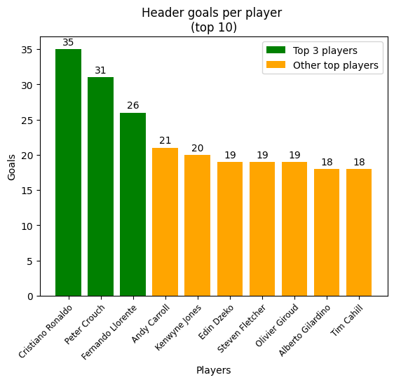

Data visualization with Matplotlib
This project is hosted on github: check it out!
Github linkIntroduction
Mastering data visualization packages such as Matplotlib, Seaborn or Plotly are useful skills for a data analyst.
While it is possible to do most of what you need with tools like Tableau, Power BI or Looker, packages such as Matplotlib offer a lot more, in terms of visualizations and of flexibility.
As part of my Football Analytics project, I wanted to showcase some of Matplotlib features and visualizations.
Dataset analyzed is related to players and goals from European football championship games, from 2008 to 2016.
1 - Why Matplotlib?
Matplotlib presents several advantages over BI tools like Tableau, Power BI or Looker for data exploration and data visualization. First, it is part of your IDE (Integrated Development Environment) so you can process your data and visualize it in the same place. Second, you have access to a high variety of chart types, from basic to elaborate visualizations, as well as customization features. Third, it is open source and free, which makes it a cost effective option.
2 - Getting started with Matplotlib
It is possible to do data visualization with just a few lines of code. While the below example is insufficient for a good visualization (in my opinion), it shows how easy it can be! For data exploration purposes, when you need to become more familiar with your data, I think modelling the data and visualizing it helps a lot. Below the code and the output.
# data prep
top_3_goal_scorers = header_attempts_and_goals_df.loc[header_attempts_and_goals_df["sub_type"] == "goal"]
top_3_goal_scorers = top_3_goal_scorers.groupby(by="player", as_index=False).agg({"player_name": "first", "event_id": "nunique"})
top_3_goal_scorers = top_3_goal_scorers.sort_values(by="event_id", ascending=False).head(3)
# data viz
fig, ax = plt.subplots()
players = top_3_goal_scorers["player_name"]
goals = top_3_goal_scorers["event_id"]
ax.bar(players, goals)
ax.set_ylabel('goals')
ax.set_title('Header goals per player (top 3)')
plt.show()

3 - Limitations with basic visualizations
The below chart is a no-no. It is visually not appealing and it is not easily understandable.
While a few lines of code can generate a powerful visualization, this is not always the case.
If we look at the below chart, here are a few takeaways:
- it lacks a title and legends
- x axis labels cannot be read properly
- bar values are missing
- it is monochromatic (which is okay, but a gradient may be nicer)
In the next section, we will review a few ways to customize Matplotlib charts for better visualizations. 
Customizing Matplotlib visualizations
Matplotlibs is highly flexible. Looking at the previous visualization, it is missing a few things: colors, titles and labels. Visually, it is obvious that Cristiano Ronaldo scored more headers than Fernando Llorente, but it is harder to read the exact number of goals. Also, it would be a nice touch to have different shades of the same color on this chart, to show the decrease in the number of header goals.
1 - Titles and labels
There are plenty of options to customize titles and labels. Some of the most common features are: font (police, size, color), background color, rotation and positioning. Working with the previous chart, we will add: a chart title, x and y axis labels and bar labels.
Each bar artist has coordinates (x, y), a width and a height. The idea is to place each bar label at the right place. To position a label at the center of a bar, the idea is to get it's x coordinate (get_x()) then half of its width (get_width() / 2) and then center it (ha = "center"). To position a label at the top of a bar, the idea is to set it to just above its height (get_height() + 1).
Rotating the x axis labels makes the visualization more readable. For optimal results with a 45 degree rotation, 2 more features are required: horizontal alignment set to right (ha = "right") and an anchored rotation_mode (rotation_mode = "anchor").
The below code snippet shows some options, commented to explain each of these.
# adding title, x and y labels
ax.set_title("Header goals per player \n(top 10)") # \n for line return
ax.set_ylabel("Goals")
ax.set_xlabel("Players")
# adding labels to bars
for bar, value in zip(bars, goals):
ax.text(
x=bar.get_x() + bar.get_width() / 2,
y=bar.get_height() + 1,
s=value,
ha="center",
va="center",
color="black"
)
# 45 degree rotation, using both horizontal alignment and rotation mode for best readability
plt.xticks(rotation=45, ha="right", rotation_mode="anchor", fontsize="small")

2 - Colors
It is possible to have different colors on a visualization, including a color gradient. You need to assign one color per data point or to all data points. The trick here is to do normalize the values (min-max scaling), i.e. to rescale these values on a range from 0 to 1. These new values will define the "alpha" of the color argument, which is it's transparency (0 = transparent, 1 = opaque). Below the code sample for this (note that colors is a list of colors, one per data point).
# adding a color gradient
# this is done by normalization / min-max scaling
normalized_goals = np.array(goals) / max(goals)
colors = [("#020079", alpha) for alpha in normalized_goals]
# ...
# creating bars with a color argument
bars = ax.bar(players, goals, color=colors)

3 - Legend
You can also add a legend to your chart. In our example, this is not very useful, but let's see how it's done anyway. One legend element is called a "handle". It is made of 2 components: a patch of color and a label. The code example below shows how to create a simple legend.
# adding a color based on the values: top 3 players are in green, other players are in orange
colors = ["green" if i < 3 else "orange" for i in range(len(top_10_goal_scorers))]
# adding handles
handles = [
Patch(facecolor="green", label="Top 3 players"),
Patch(facecolor="orange", label="Other top players")
]
# ...
# legend
plt.legend(handles=handles)

4 - Other useful features
There are plenty of options to enrich a matplotlib visualization, on top of titles, labels and colors. If your visualization does not fit your figure area, you can try plt.tight_layout() for better results. If you want to add a grid, you can use plt.grid(), which can make your visualizations more readable. Very useful too, the ax.set_xscale() and ax.set_yscale() features, to adjust your scaling (e.g. adjust to a logarithmic scale).
Conclusion
Matplotlib's flexibility makes it an extremely powerful tool for data visualizations. However, it is easy to make unappealing viz and waste your time working your way through the many available customization features. This article was only an introduction to some of the many features that Matplotlib offer. Being a bit familiar with Matplotlib is also useful to then initiate to another great data viz package, Seaborn, as it is built on top of Matplotlib.